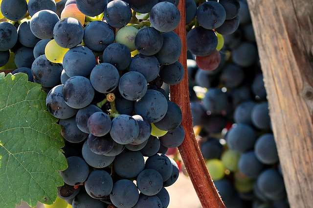
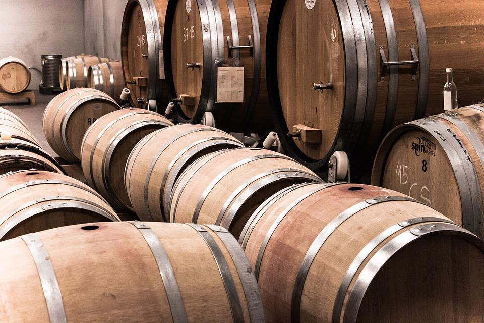

Estamos ubicados en la provincia de Mendoza, en el corazón de la zona vitivinícola argentina, famosa por sus Malbecs y otros vinos tintos.

Ofrecemos degustaciones, visitas guiadas y cursos.

¡¡¡Conocé nuestros productos!!!
Nuestros Vinos
Blancos
El vino blanco es una variedad de vino que puede oscilar entre las tonalidades amarillo pajizo, amarillo verdoso o amarillo oro. Se produce por la fermentación alcohólica de la pulpa no coloreada de uvas que pueden tener una piel de color blanco o negro, a fin de mantener un color amarillo transparente en el producto final. La amplia variedad de vinos blancos proviene de la gran cantidad de cepas y métodos de elaboración empleados, así como de la relación de azúcar residual.
El vino rosado es aquel que tiene algo del color típico del vino tinto, pero solo lo suficiente como para darle un color rosa, que puede ir del claro al fuerte casi violeta, según las uvas y las técnicas de producción usadas.
El vino tinto es un tipo de vino procedente mayormente de mostos de uvas tintas, con la elaboración pertinente para conseguir la difusión de la materia colorante que contienen los hollejos de la uva.